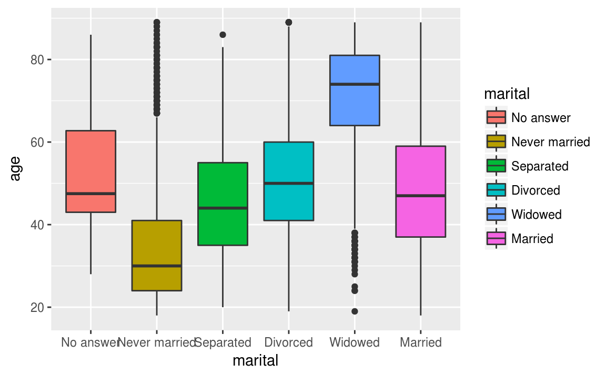

Chapitre 12 Deux variables
12.1 Mise en place
library(tidyverse)
library(questionr)
library(knitr)12.2 Croisement de deux variables qualitatives
Quand on veut croiser deux variables qualitatives, on fait un tableau croisé.
12.2.1 Tableaux à double entrée
Lorsque deux variables (peu importe leur type) sont étudiées simultanément, on construit un tableau à double entrée.
| Nom de la variable 2 | ||
|---|---|---|
| Nom de la variable 1 | (Modalités de la variable 2) | Total |
| (Modalités de la variable 1) | (Fréquences) | (Sous-totaux) |
| Total | (Sous-totaux) | (Total) |
Nous utilisons la commande table à laquelle on passe cette fois deux variables en argument. Par exemple, en utilisant la base de données gss_cat, nous pouvons croiser les variables marital et race.
table(gss_cat$marital,gss_cat$race)
#>
#> Other Black White Not applicable
#> No answer 2 2 13 0
#> Never married 633 1305 3478 0
#> Separated 110 196 437 0
#> Divorced 212 495 2676 0
#> Widowed 70 262 1475 0
#> Married 932 869 8316 0Nous pouvons exclure certaines modalités en utilisant l’option exclude. Par exemple, on peut exclure les modalités Not applicable de la façon suivante:
table(gss_cat$marital,gss_cat$race, exclude = c("Not applicable"))
#>
#> Other Black White
#> No answer 2 2 13
#> Never married 633 1305 3478
#> Separated 110 196 437
#> Divorced 212 495 2676
#> Widowed 70 262 1475
#> Married 932 869 8316Nous pouvons obtenir un tableau à double entrée comportant des pourcentages à l’aide de la commande prop.
prop(table(gss_cat$marital,gss_cat$race))
#>
#> Other Black White Total
#> No answer 0.0 0.0 0.1 0.1
#> Never married 2.9 6.1 16.2 25.2
#> Separated 0.5 0.9 2.0 3.5
#> Divorced 1.0 2.3 12.5 15.7
#> Widowed 0.3 1.2 6.9 8.4
#> Married 4.3 4.0 38.7 47.1
#> Total 9.1 14.6 76.3 100.0Pour connaître toutes les options de la commande prop, vous pouvez utilisez la commande ?prop dans la console.
Nous pouvons également obtenir les totaux des lignes et des colonnes en utilisant la commande addmargins:
addmargins(table(gss_cat$marital,gss_cat$race))
#>
#> Other Black White Not applicable Sum
#> No answer 2 2 13 0 17
#> Never married 633 1305 3478 0 5416
#> Separated 110 196 437 0 743
#> Divorced 212 495 2676 0 3383
#> Widowed 70 262 1475 0 1807
#> Married 932 869 8316 0 10117
#> Sum 1959 3129 16395 0 21483Pour pouvoir interpréter ce tableau on doit passer du tableau en effectifs au tableau en pourcentages ligne ou colonne. Pour cela, on peut utiliser les fonctions lprop et cprop de l’extension questionr, qu’on applique au tableau croisé précédent.
Pour calculer des pourcentages lignes.
lprop(table(gss_cat$marital,gss_cat$race))
#>
#> Other Black White Total
#> No answer 11.8 11.8 76.5 100.0
#> Never married 11.7 24.1 64.2 100.0
#> Separated 14.8 26.4 58.8 100.0
#> Divorced 6.3 14.6 79.1 100.0
#> Widowed 3.9 14.5 81.6 100.0
#> Married 9.2 8.6 82.2 100.0
#> All 9.1 14.6 76.3 100.0Pour calculer des pourcentages colonnes.
cprop(table(gss_cat$marital,gss_cat$race))
#>
#> Other Black White All
#> No answer 0.1 0.1 0.1 0.1
#> Never married 32.3 41.7 21.2 25.2
#> Separated 5.6 6.3 2.7 3.5
#> Divorced 10.8 15.8 16.3 15.7
#> Widowed 3.6 8.4 9.0 8.4
#> Married 47.6 27.8 50.7 47.1
#> Total 100.0 100.0 100.0 100.0Comme vous pouvez le constater, les commandes lprop et cprop enlève les lignes ou colonnes dont la somme des effectifs est zéro. Pour empêcher ce comportement, vous devez utilisez l’option drop = FALSE. Par exemple:
lprop(table(gss_cat$marital,gss_cat$race), drop = FALSE)
#>
#> Other Black White Not applicable Total
#> No answer 11.8 11.8 76.5 0.0 100.0
#> Never married 11.7 24.1 64.2 0.0 100.0
#> Separated 14.8 26.4 58.8 0.0 100.0
#> Divorced 6.3 14.6 79.1 0.0 100.0
#> Widowed 3.9 14.5 81.6 0.0 100.0
#> Married 9.2 8.6 82.2 0.0 100.0
#> All 9.1 14.6 76.3 0.0 100.0Pour connaître toutes les options de ces deux commandes, vous pouvez taper ?lprop ou ?cprop dans la console.
12.2.2 Représentation graphique - diagramme à bandes chevauchées
Le graphique utilisé pour représenter simultanément deux variables qualitatives est le diagramme à bandes rectangulaires chevauchées.
Ce graphique ressemble au diagramme à bandes rectangulaires verticales, à la différence qu’il y aura au moins deux rectangles pour chacune des modalités ainsi qu’une légende.
Encore une fois, ce graphique peut être construit à partir des fréquences absolues ou relatives.
Nous pouvons comparer les variable race et marital avec des diagrammes à bandes chevauchées en utilisant l’option position = "dodge".
ggplot(data = gss_cat, aes(x = race, fill = marital))+
geom_bar(position = "dodge")+
labs(x = "Race",
y = "Fréquence")
12.2.3 Représentation graphique - diagramme à bandes superposées
Si nous n’utilisons pas l’option position = "dodge", nous obtenons des diagrammes à bandes superposées.
ggplot(data = gss_cat, aes(x = race, fill = marital))+
geom_bar()+
labs(x = "Race",
y = "Fréquence")
Pour obtenir des diagrammes comportant des fréquences relatives, nous utilisons l’option position = "fill".
ggplot(data = gss_cat, aes(x = race, fill = marital))+
geom_bar(position = "fill")+
labs(x = "Race",
y = "Fréquence")
12.3 Croisement d’une variable qualitative et d’une variable quantitative
12.3.1 Représentation graphique - boîte à moustaches
Croiser une variable quantitative et une variable qualitative, c’est essayer de voir si les valeurs de la variable quantitative se répartissent différemment selon la catégorie d’appartenance de la variable qualitative.
Pour cela, l’idéal est de commencer par une représentation graphique de type “boîte à moustache”.
L’interprétation d’une boîte à moustaches est la suivante : Les bords inférieurs et supérieurs du carré central représentent le premier et le troisième quartile de la variable représentée sur l’axe vertical. On a donc 50% de nos observations dans cet intervalle. Le trait horizontal dans le carré représente la médiane. Enfin, des “moustaches” s’étendent de chaque côté du carré, jusqu’aux valeurs minimales et maximales, avec une exception : si des valeurs sont éloignées du carré de plus de 1,5 fois l’écart interquartile (la hauteur du carré), alors on les représente sous forme de points (symbolisant des valeurs considérées comme “extrêmes”).
Nous discuterons plus en détail des toutes ces mesures au chapitre 16.
Voici le graphique boîte à moustaches représentant les variables marital et age.
ggplot(data = gss_cat, aes(x = marital, y = age))+
geom_boxplot()
#> Warning: Removed 76 rows containing non-finite values (stat_boxplot).Pour mieux visualiser vos boîtes à moustache, vous pouvez les colorier. Si nous voulons colorier les boîtes en fonction de la variable marital, nous ajoutons l’option fill = marital..
ggplot(data = gss_cat, aes(x = marital, y = age, fill = marital))+
geom_boxplot()
#> Warning: Removed 76 rows containing non-finite values (stat_boxplot).
12.3.2 Représentation graphique - diagramme en violon
Nous pouvons également visualiser le lien entre une variable qualitative et une variable quantitative à l’aide d’un diagramme en violon.
L’interprétation du diagramme en violon est la suivante: La largeur du diagramme nous renseigne sur la fréquence d’apparition de la variable. Plus ils sont larges, plus la valeur de la variable est fréquente et inversement.
Nous pouvons représenter les diagrammes en violon de la variable marital et de la variable age.
ggplot(data = gss_cat, aes(x = marital, y = age))+
geom_violin()
#> Warning: Removed 76 rows containing non-finite values (stat_ydensity).Nous pouvons ajouter de la couleur avec l’option fill.
ggplot(data = gss_cat, aes(x = marital, y = age, fill = marital))+
geom_violin()
#> Warning: Removed 76 rows containing non-finite values (stat_ydensity).Nous pouvons bien sûr superposer des boîtes à moustaches et des diagrammes en violon.
ggplot(data = gss_cat, aes(x = marital, y = age, fill = marital))+
geom_violin()+
geom_boxplot(width = 0.1)
#> Warning: Removed 76 rows containing non-finite values (stat_ydensity).
#> Warning: Removed 76 rows containing non-finite values (stat_boxplot).
12.4 Croisement de deux variables quantitatives
#ggplot(data = flights, aes(x = dep_delay, y = arr_delay))+
# geom_point(alpha = 0.25)